跟GPT做遊戲很簡單喔
起初，我在 Facebook 看到老皮做的一系列遊戲，心想：「我也想做！」今年用 AI 的感覺，是只要把想法用自然語言說出來，就有機會一步步做成能玩的東西。既然機會來了，那我該做什麼給自己玩？
後來，我和 GPT 陸續做了五款小遊戲。先介紹給大家，挑一款玩玩看；接著再聊我們怎麼從一句玩笑，走到一次次修改。
01 五款遊戲，五種不同的快樂
HDMI 插入傳說
把 HDMI 接電視的小挫折，變成對準插孔、抓時機出手的挑戰。熟悉的東西，換個角度就能玩。
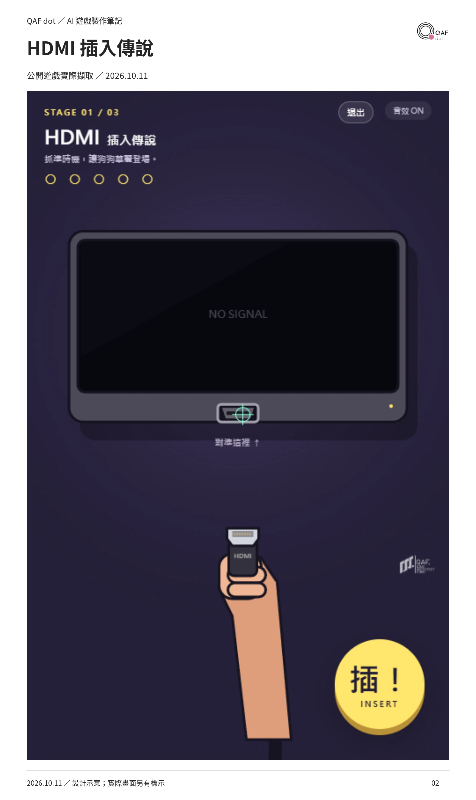
AI 出氣拳
跟 AI 共事難免誤會，氣到想找個出氣筒？把這份心情做成拳頭、受擊反應與表情，按下去就有回應。
修理上弦枕
在可愛的吉他工坊裡，磨一點、測一下，必要時補骨粉與膠。樂趣是把原本不好彈的吉他，慢慢修到剛剛好。
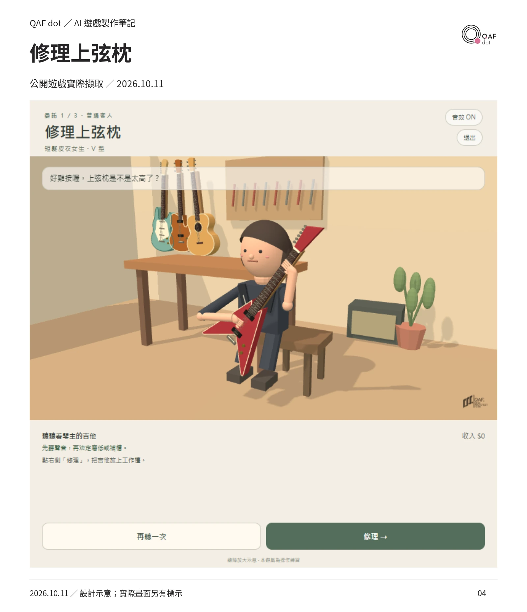
腳踝終結者
你按 Pick 彈一下，鼓手就跟一下。越按越快，看看他能跟到哪裡；音樂人的練團壓力，變成誇張的小挑戰。
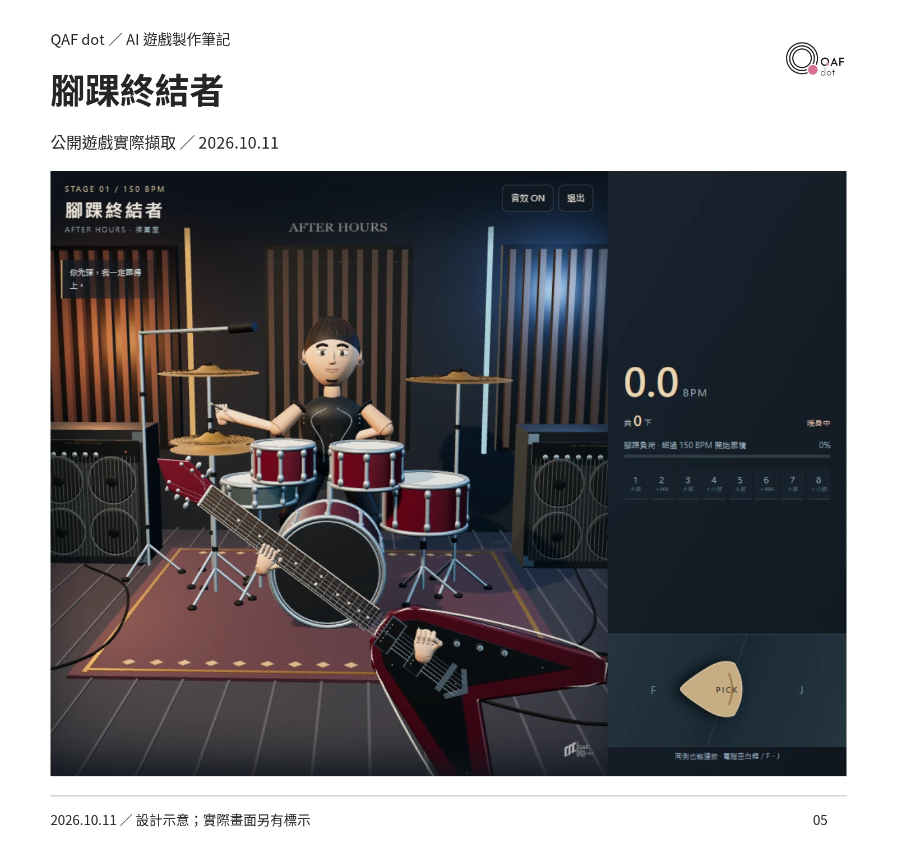
金屬爆破大王
自由組合效果器，用重金屬轟垮房子。器材、能量、建築反應與音樂一起堆高，享受爆炸前的期待。
02 最快的點子，可能就是生活中的一個梗
HDMI 的想法，來自我看到老皮和阿呆互動的一個小梗。老皮的 BOB'S DIY KITS 和效果器、導線、DIY 零件有關；阿呆的沙克買發克迪克則分享吉他器材，也提供效果器、音箱等維修與製作服務。熟悉音樂器材的人聊起日常，連接電視都能變成遊戲靈感。
《AI 出氣拳》則更直接：跟 AI 溝通出了誤會，生氣想發洩，那就做一個出氣筒。先找到「我自己也想按一下」的瞬間，比一開始規劃龐大世界觀更容易起步。
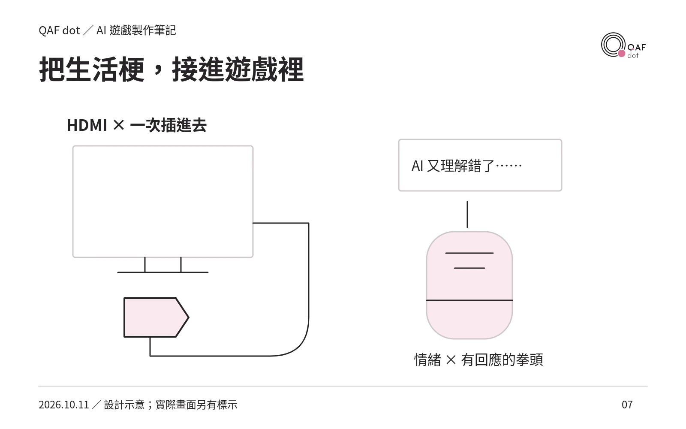
03 流程更簡單：先把第一關做好
我最想提早做的，是先做一關，馬上試玩。先確認核心動作有沒有趣，再調整操控、手機干擾、介面與可讀性。這些成立後，才決定後面要加幾關、怎麼變難；不然同一個問題會跟著複製到每一關。
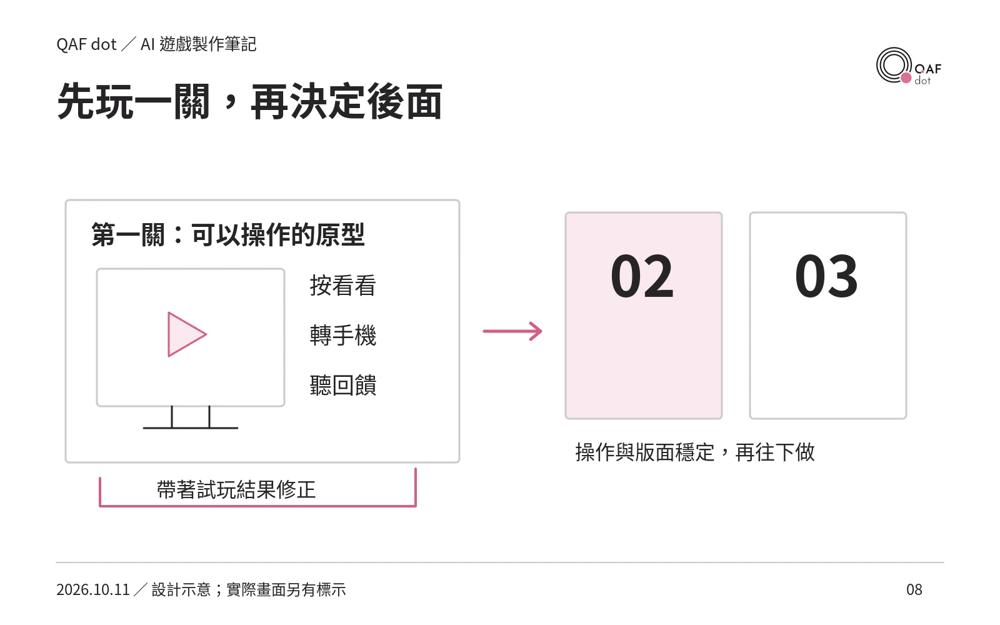
04 操作性：每一下都要有回應
《腳踝終結者》遇過按太快就漏計的問題。只說「再靈敏一點」不夠：同側連按、雙指交替、PC 空白鍵，都要分別測試。四連音的 150 BPM 是每秒十下；要核對輸入、計分和發聲，不能因為上一個動畫還沒播完，就不收下一次按壓。
05 手機干擾：處理瀏覽器的預設手勢
狂按突然放大、長按開始選字、拖動讓整頁跟著跑，這些屬於瀏覽器預設手勢與行為。請 AI 在遊戲操作區處理 touch-action、文字選取與觸控取消，並避免同一下被重複計入。旋轉螢幕、切到背景再回來，也不能卡在「一直按著」的狀態。限制只放在需要的遊戲區，正常閱讀仍保留捲動與縮放。
06 可讀性：電腦、直式、橫式都要試
《金屬爆破大王》改了很多次版面。「盤子小一點」曾被理解成把寬度縮窄，兩邊空了，選單卻還是擠。真正要的是降低盤面高度、合併零散資訊，讓動畫和選單都有空間：效果器一排三個，露出兩排多一點並可滑動，吉他手完整、主建築夠大，底部按鈕不被瀏覽器工具列擋住。
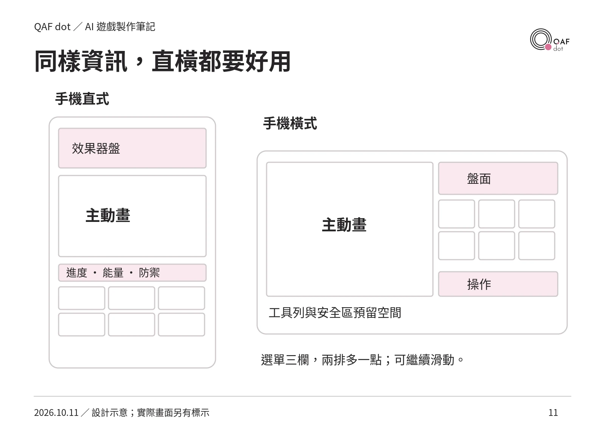
07 再帶入角色模型與音樂素材
玩法穩定後，再精修角色、道具與動作。吉他要有明確造型，握琴、按弦和撥弦要對得上；鼓手的頭髮不能穿模。可以先用 GPT 圖像生成整理角色三視圖、服裝與道具參考，再考慮 Meshy 這類 3D 工具。這是我還沒採用、可往下試的工具方向；有模型後，仍要檢查骨架、手指接觸與動作。
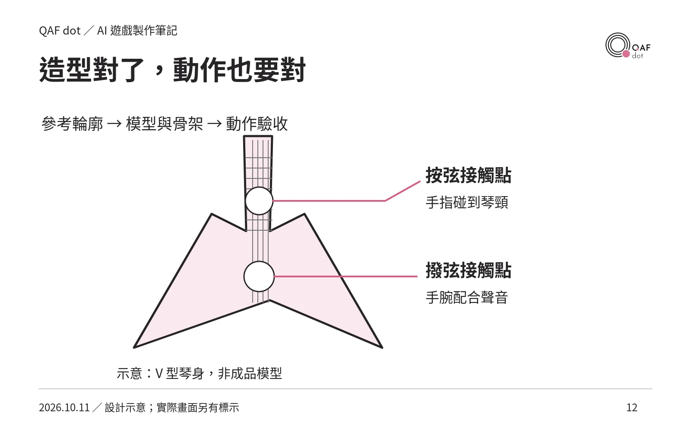
音樂我找 Suno 幫忙做配樂，再挑片段剪成循環。配樂和每按一次就發出的單音，是兩種素材：整首伴奏不能直接當 Pick 音效，否則連按就會疊成一團。分軌功能可以協助整理素材，但分離是否乾淨仍要聽。進遊戲後，再檢查調性、鼓與吉他的平衡、循環接點，以及第一關先載入、其餘背景下載的等待感。
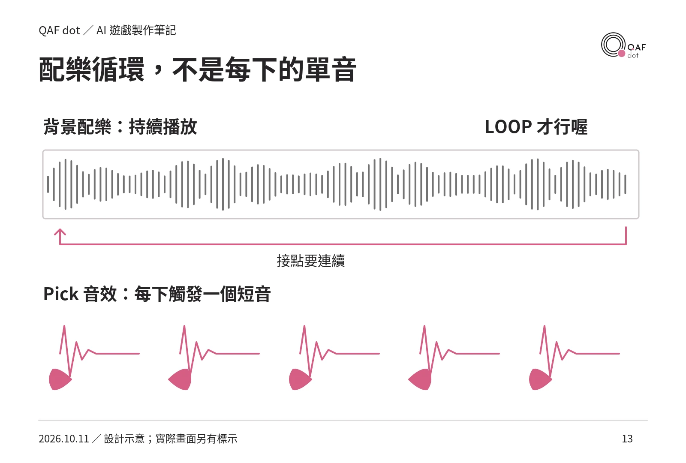
08 要跟 AI 說什麼：必備萬用提示詞
不必一次把所有想法塞完。先交代玩家做什麼，再描述要保留的部分、修改的範圍與驗收方式。先複製下面的萬用提示詞，再搭配起步、修改、角色與配樂的四種情境，換成自己的遊戲內容。
必備萬用 AI 提示詞
我想做［作品／功能］，給［使用者］在［裝置與情境］使用。希望他能完成［具體動作］，得到［看得見或聽得見的結果］。
現有材料是［檔案／連結／參考圖］。這次先做［最小可用範圍］，保留［已確認的部分］，不要改［範圍外項目］。不確定的事請標示，不要自行補成事實。
先依我的材料整理需求，再製作第一版。完成後用［裝置／尺寸／操作步驟］測試，檢查［預期結果］。交付可用檔案或網址，並說明已完成、未完成與驗證結果。將這次確認的共用原則留下，供下次沿用。
起步：只做可玩的第一關
修改：用截圖把感覺說清楚
角色：造型與動作一起交代
配樂：說清楚用途與接點
每輪確認後，把共用的介面、音訊和測試原則留下；各遊戲的特殊規則另外記錄。交接時附上最新版本、截圖、素材連結與尚未完成的項目，就比較不會把剛修好的東西改回去。
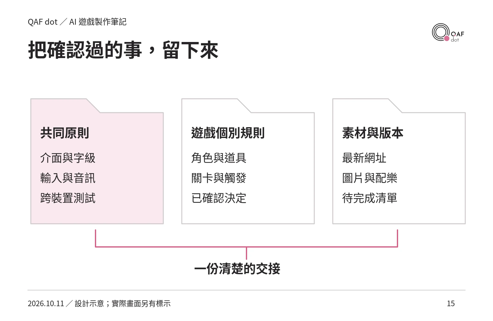
09 我接下來想改進的：讓人期待下一次
目前依我的經驗，大概想到兩條路。三關的遊戲可以先建立期待，再用越來越無厘頭的登場收尾，或提高難度、最後給個獎品。像爆破遊戲後續想安排：小店先湧出人群，下一關換成蟲鼠，最後連動物、車輛和巨型角色都出來——這些是待製作的構想，笑點要一段段出現。
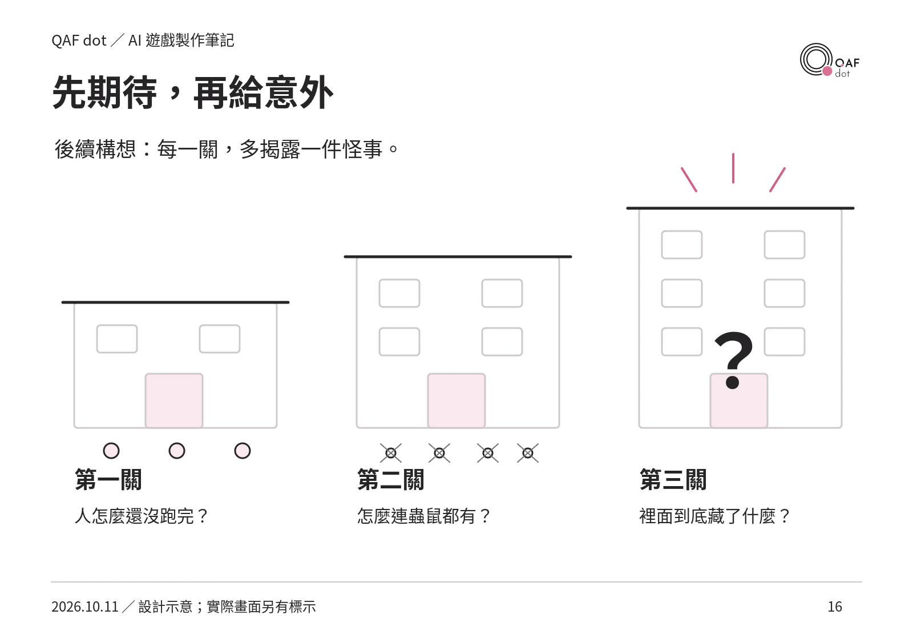
只有一關的遊戲，可以專心做爽快的發洩，也可以讓每次分數不同、保存個人紀錄，讓玩家想再試一次。不一定都要越做越複雜；我想留下的是「再玩一下好了」的感覺。
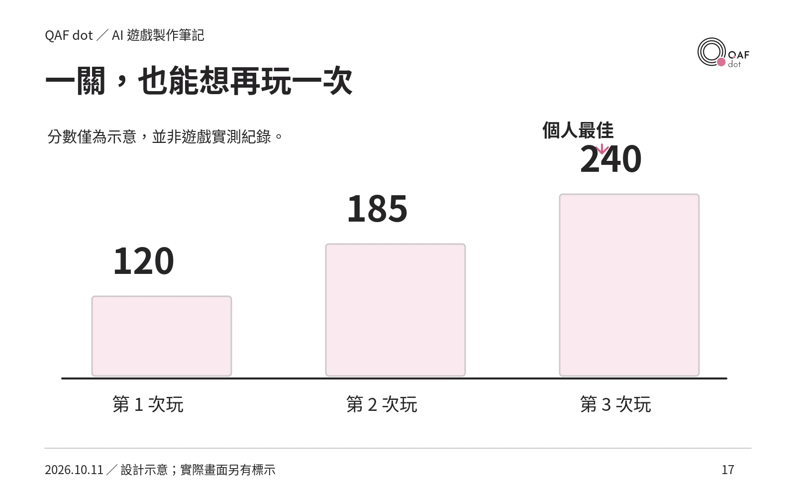
AI 補充建議：下一輪可以一次只測一個鉤子，例如「純分數」和「加上意外登場」，找幾位沒參與製作的人試玩。觀察他們在哪裡笑、哪裡停、會不會再按一次，再決定值得留下什麼。這是下一步的建議，還不是這五款遊戲的驗證結論。
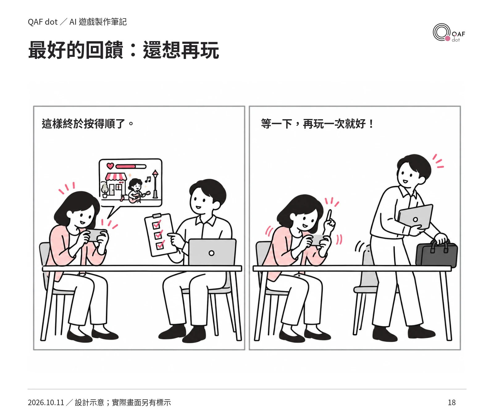
本文整理 QAF 與 GPT 的製作對話、實際修改與後續構想。遊戲截圖擷取於 2026 年 10 月 11 日；工具資訊連至官方說明，示意插圖不代表已實作功能。